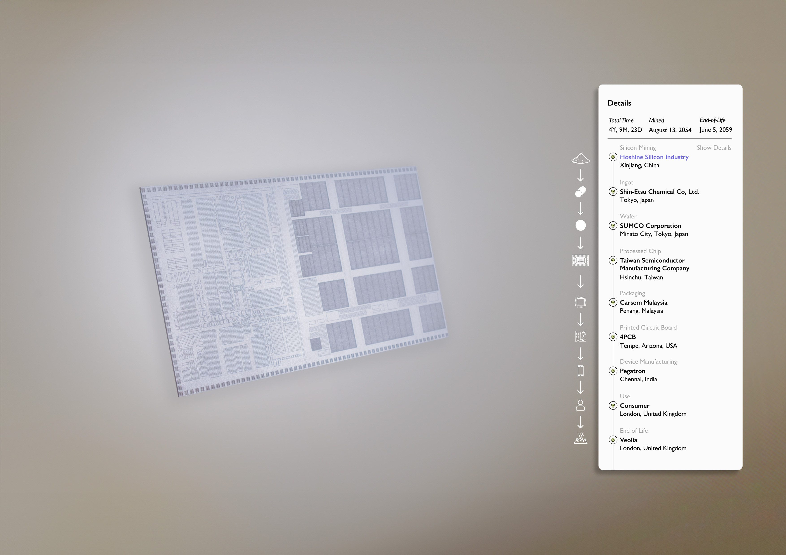
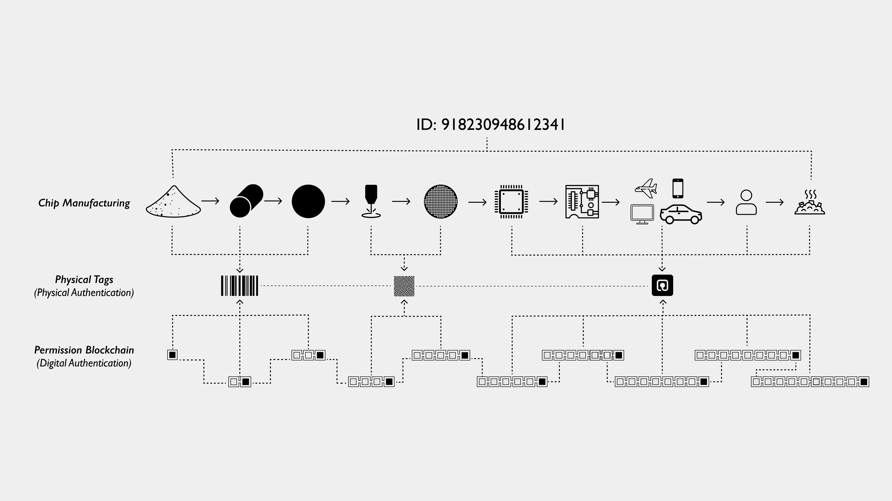
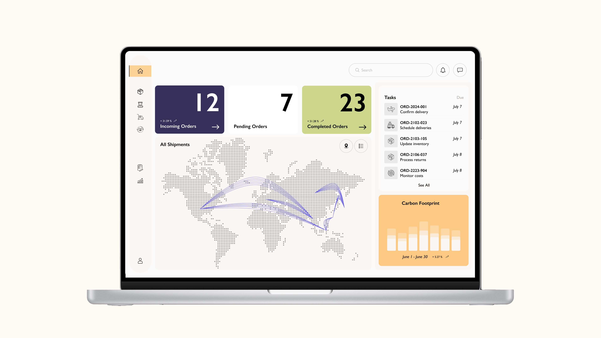
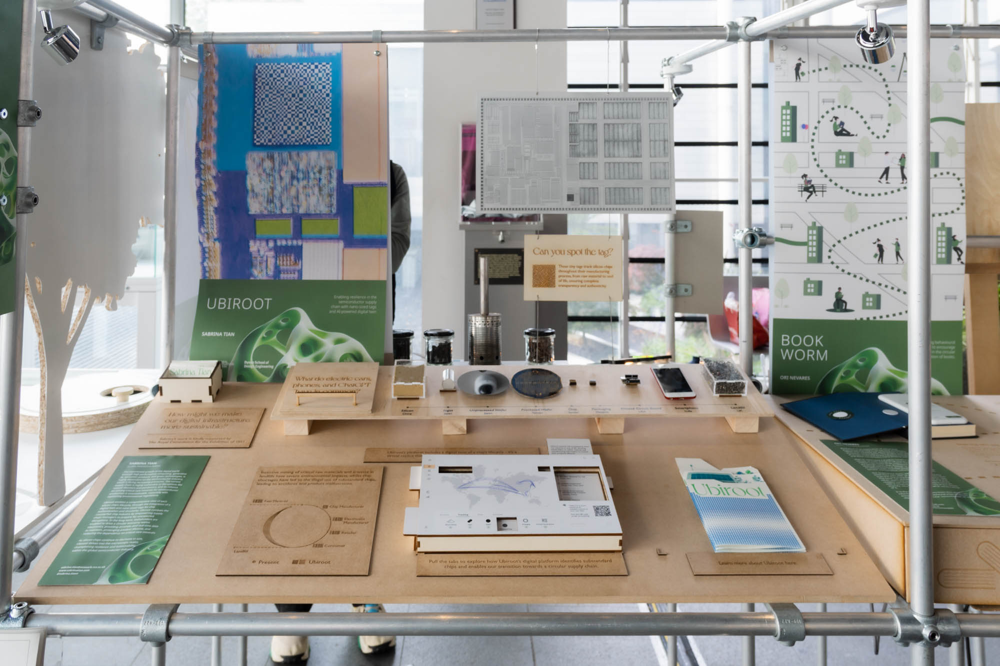
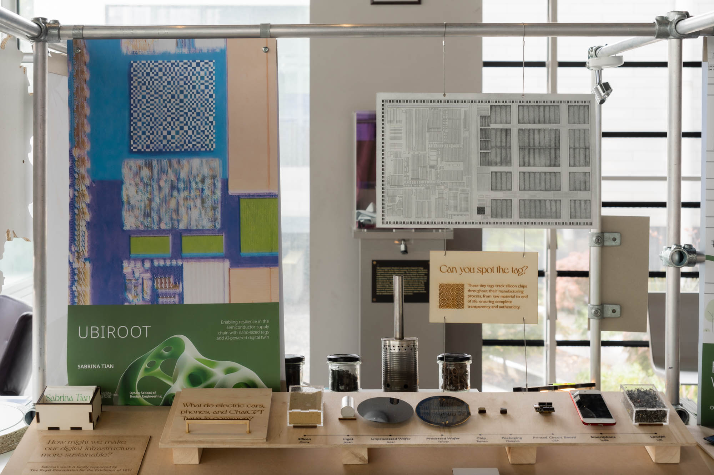
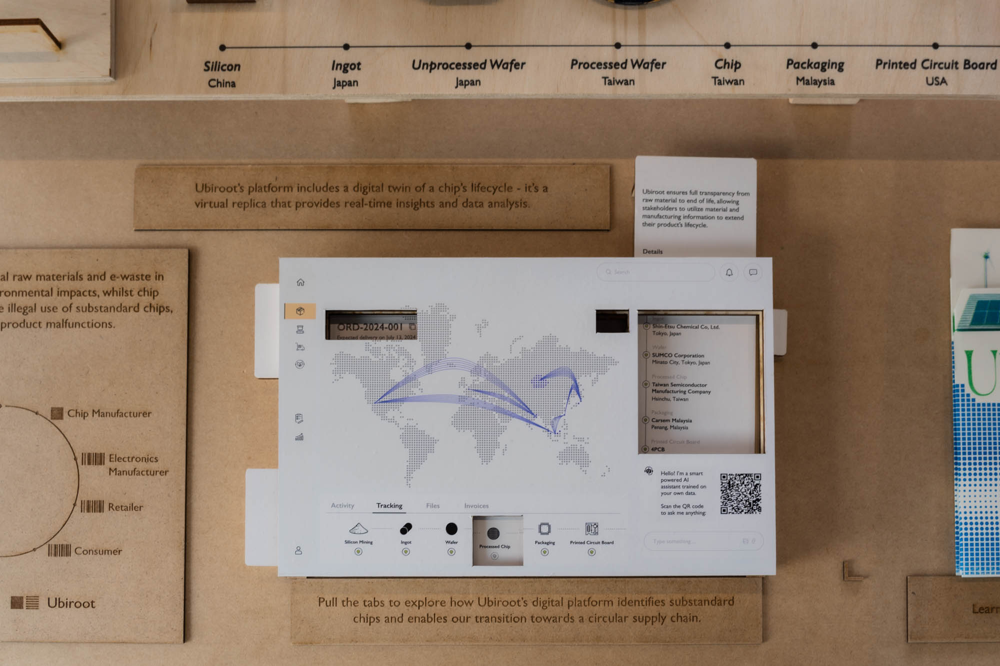
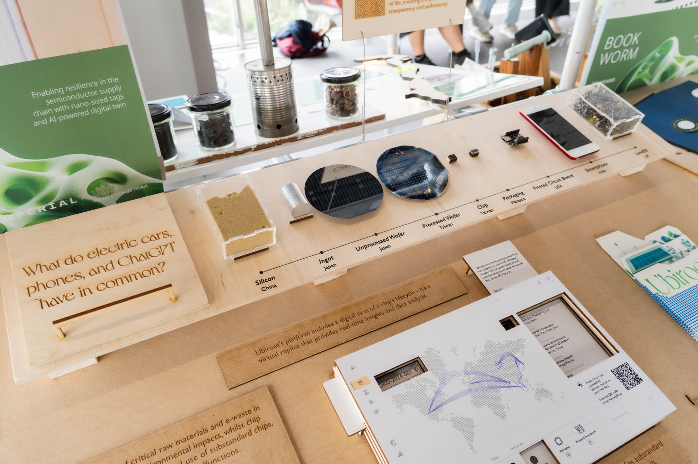
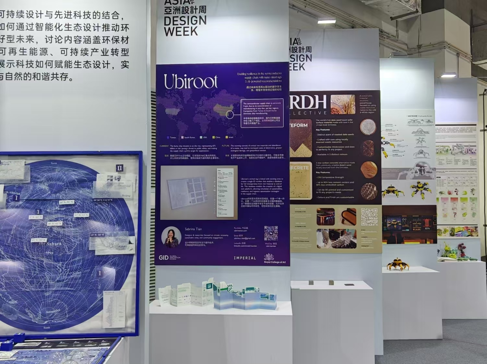

The rise of counterfeit and faulty chips — a $75 billion global threat — compromises product safety and weakens fragile semiconductor supply chains. Ubiroot enables a comprehensive view of each silicon chip's lifecycle through a digital twin and nano-sized tags for chip authentication and circularity.

As our digital infrastructure expands — from AI and green tech to consumer electronics — we are increasingly dependent on the semiconductor industry. The current supply chain is highly vulnerable to disruptions like natural disasters and pandemics, and its reliance on mining critical rare minerals is unsustainable.
Ubiroot enables a comprehensive view of each silicon chip's lifecycle through the integration of a digital twin and nano-sized tags for chip authentication and circularity. As silicon chips continue to decrease in size, Ubiroot delves into the microscopic realm, championing resilience and sustainability within the global semiconductor industry.
Sustainability & Logistics Overview with Integrated AI Chatbot.
The counterfeit chip industry thrives on opacity. Without individual chip-level traceability, supply chain managers cannot detect faults, authenticate components, or prepare for disruptions. Meanwhile, growing scarcity of critical raw materials and mounting e-waste are escalating costs, environmental harm, and geopolitical tension.
$75B in counterfeit and faulty chips compromises product safety across AI, defence, and consumer electronics.
Chips move through dozens of hands globally with no unified identity or tracking system.
Semiconductor production relies on rare minerals under tightening environmental and geopolitical pressure.
Without circularity infrastructure, valuable materials are lost to landfill rather than recovered.

System map.
Ubiroot introduces nano-sized etched tags that link with existing chip identifiers to generate a unique ID, creating a transparent database that tracks each chip from raw material to end-of-life. This forms the basis of a digital twin platform, enabling real-time monitoring and simulations for sustainability, logistics, and risk management.
During inspection, each chip's tag is verified and its status logged to the blockchain — ensuring transparency and traceability for supply chain managers at every stage.

Without intervention, the industry faces rising silicon scarcity, ecological degradation, e-waste, and geopolitical instability. Ubiroot's platform supports a circular future — facilitating urban mining, recycling, closed-loop systems, disassembly-ready design, and cross-sector collaboration.
Ubiroot received an Honorable Mention at the 2024 Design Intelligence Awards and was selected for Asia Design Week 2024. It has been showcased at the Royal College of Art, Imperial College London, and the Royal Commission for the Exhibition of 1851.




